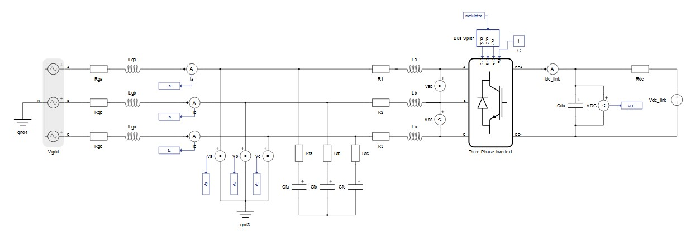
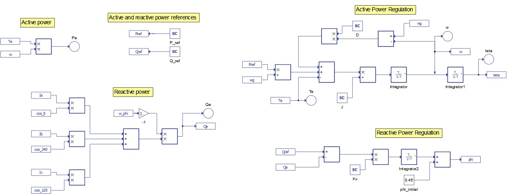
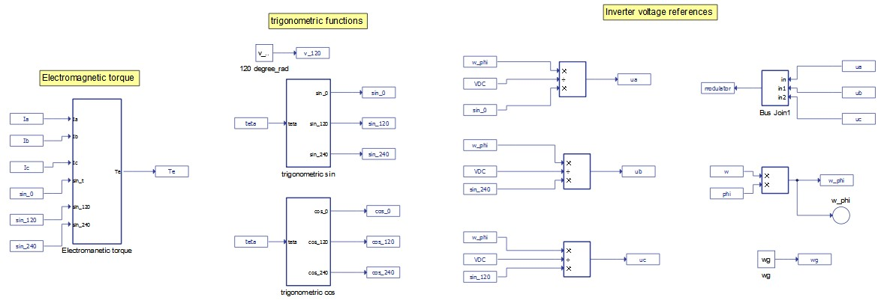
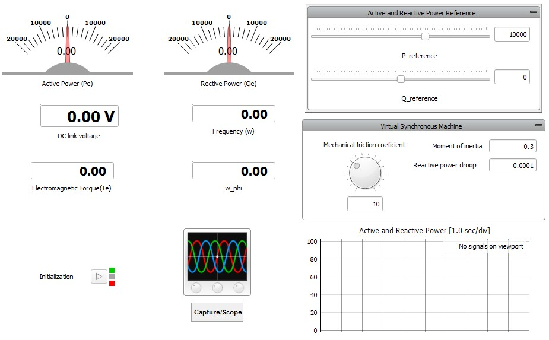
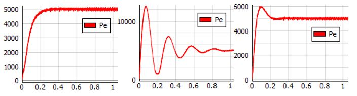
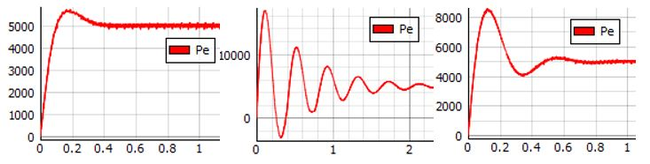
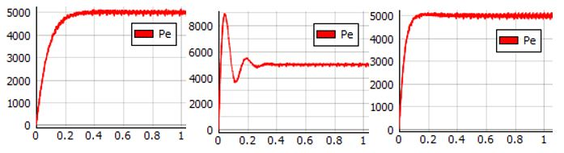
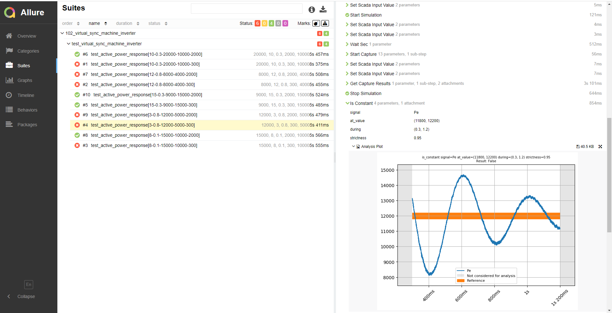

Grid-connected inverter with virtual synchronous machine
Control demonstration of grid-connected converters to help maintain grid stability
Introduction
Synchronous generators (SG) contribute to the transient grid stability through rotating mass inertia. An increased presence of grid-connected, converter-based, distributed energy resources (DER) has a negative cumulative impact on the transient stability characteristic of the power system. One solution to counter this problem is to modify converter control so that it can mimic the dynamics of a SG and provide virtual inertia. This application demonstrates a grid-connected inverter with the ability to act as a virtual synchronous generator (VSG).
VSG model
The VSG consists of an energy source, a converter, and a control mechanism. The VSG control block is based on the following the swing equations for SGs.
Swing Equation:
Electromagnetic torque:
Three-phase generated voltage:
Reactive power:
where:
Virtual inertia is proportional to the nominal power of the VSG divided by the maximum allowable rate of frequency change.
Model description
The electrical part of the model is shown in Figure 1. It is a three-phase inverter model. For powering the DC link, the inverter uses an ideal DC source. The grid-side connection of the inverter is implemented using an LC filter. The suggested parameters of the filter for this model are C = 20e-6 F and L = 2.6e-3 H (the parameters are set in the model initialization panel). On the left side of the schematic there is the three-phase grid with an RL impedance. Components for the phase measurements of current and voltage are located between the grid and the inverter.

The control part consists of active- and reactive-power regulation loops which are shown in Figure 2. The reference for the frequency (wg) is set in the model initialization panel. The reference for the active power (Pref) is set in HIL SCADA by adjusting the slider to the desired value. The active power loop uses a mechanical friction coefficient (D) as a feedback gain. Further, this loop regulates the speed of the VSG and generates the phase angle theta. The reference for the reactive power (Qref) is set in HIL SCADA by adjusting the slider to the desired value. This loop generates the phase angle phi, which is further used in the torque calculation and in the generation of the converter reference signals.

The electromagnetic torque calculation and reference signals for the inverter are shown in Figure 3. The electromagnetic torque (left of Figure 3) is calculated using the Swing Equations described in the VSG model section. The PWM reference signals are generated and routed to the inverter via the voltage of the DC link (VDC, shown in Inverter Voltage References at the right of Figure 3), the phi angle from the reactive power regulation loop (previously calculated in Reactive Power Regulation at the bottom right of Figure 2), and sine transformations (calculated in Trigometric Functions in the middle of Figure 3).

Simulation
This application comes with a pre-built SCADA panel (Figure 4). The panel offers most essential user interface elements (widgets) to monitor and interact with the simulation in runtime. You can customize it freely to fit your needs.

The purpose of this model is to show that the inverter can mimic the dynamic effects associated with electrical machine inertia. The transient of the active power injection into the grid depends on the mechanical friction coefficient (D) and the moment of inertia of the VSG rotor. The transient of the reactive power injection into the grid depends primarily on the reactive power factor droop (Kv). Three cases for active power transient response are analyzed. In all cases, the reference active power is set to 5000 W.
- Transient of the active power response in the variation of the mechanical friction
coefficient (D) while the moment inertia is set to the value of J = 0.3.
Figure 5. Transient response for J = 0.3 
Higher values of D give a transient response that achieves the steady-state without overshoot (Figure 5, left). Lower values of D give an oscillatory response (Figure 5, center), where the steady-state is reached after 1 s. With an optimal value of D, (Figure 5, right) the active power reaches the steady-state in 0.2 s.
- Transient of the active power response in the variation of D while the moment inertia is
increased to the value of J = 0.8. This is the case for VSGs with a higher power rating.
Figure 6. Transient response for J = 0.8 
Compared to the previous case, as the value of the moment inertia now has a higher value, the transient period of the active power response has increased oscillations and time taken for reaching the steady-state is also increased.
- Transient of the active power response in the variation of the mechanical friction
coefficient (D) while the moment inertia is decreased to the value of J = 0.1. This is the case
for VSGs with a lower power rating.
Figure 7. Transient response for J = 0.1 
Smaller VSGs have a small moment of inertia. The transient of the active power response can, thus, be smoother and can reach the referent value in a shorter period of time.
These examples show that within its given power rating, a converter-based DER can emulate the presence of various-sized SGs. Anyone interested in modelling and testing DER grid support by providing virtual inertia is welcome to use this model and send us their feedback.
This application example is included in the free Virtual HIL Device license and can be simulated on your PC. The Example requirements lists the file names and minimum hardware requirements needed to simulate the model.
Test automation
The provided test automation script validates transient response to active power in the inverter, considering variations in the mechanical friction coefficient and the moment of inertia. In this test, active power inputs of 8, 9, 12, 15, and 20 kW are tested considering overshoot tolerances of 0.3 and 2 kW. An example of a test case with a slow transient response and a low overshoot tolerance can be seen in Figure 8.

Example requirements
Table 1 provides detailed information about the file locations and hardware requirements for running the model in real-time, followed by the HIL device resource utilization when running the model using this minimal hardware configuration. This information is provided to help you with running and customizing the model as you see fit.
| Files | |
|---|---|
| Typhoon HIL files | examples\models\grid-connected converters\virtual sync machine inverter virtual sync machine inverter.tse virtual sync machine inverter.cus examples\tests\102_virtual_sync_machine_inverter test_virtual_sync_machine_inverter.py |
| Minimum hardware requirements | |
| No. of HIL devices | 1 |
| HIL device model | HIL101 |
| Device configuration | 1 |
| HIL device resource utilization | |
| No. of processing cores | 1 |
| Max. matrix memory utilization | 28.59% (core0) |
| Max. time slot utilization | 45.91% (core0) |
| Simulation step, electrical | 1 µs |
| Execution rate, signal processing | 250 µs |
Authors
The model featured in this application note was originally created by our academic partners. For domain-specific questions, the original authors of the application can be contacted directly:
[1] Prof. Felipe Bovolini Grigoletto (grigoletto@gmail.com)
[2] Prof. Marcio Stefanello, (marciostefa@gmail.com), Federal University of Pampa, Brazil (UNIPAMPA).